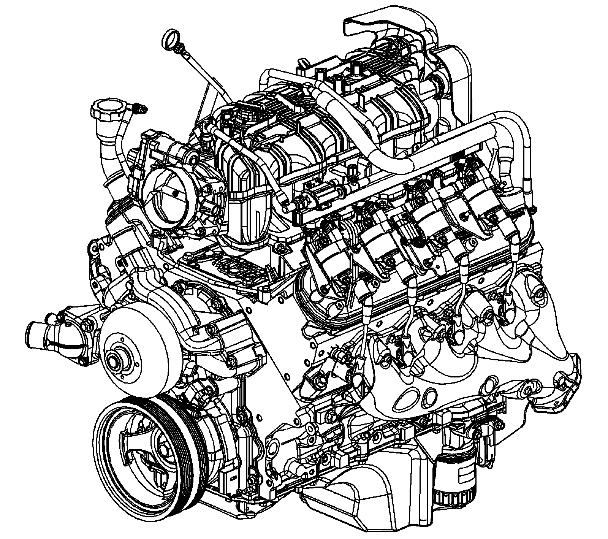

Engine Component Description
Engine Component Description
The 4.8, 5.3, 6.0, and 6.2 Liter V8 Engines

To assist in determining the applicable hardware and control system for each engine RPO, refer to Engine Content Specifications.
Camshaft and Drive System - RPO LY2/LC9/LY5/LMG
A billet steel 1 piece camshaft is supported by 5 bearings pressed into the engine block. The camshaft timing sprocket is mounted to the front of the camshaft and is driven by the crankshaft sprocket through the camshaft timing chain. The camshaft position (CMP) sensor lobes are incorporated into the front face of the camshaft sprocket with the CMP sensor mounted in the engine front cover. A timing chain tensioner is mounted to the front of the engine block above the crankshaft sprocket. The externally splined crankshaft sprocket is positioned to the crankshaft by a key and keyway. The crankshaft sprocket external splines drive the oil pump drive gear. A retaining plate mounted to the front of the engine block maintains camshaft location.
Camshaft and Drive System - RPO LY6/L76/L92
A billet steel 1 piece camshaft is supported by 5 bearings pressed into the engine block. The camshaft position (CMP) actuator is mounted to the front of the camshaft and retained by the CMP solenoid valve. The CMP actuator is driven by the crankshaft sprocket through the camshaft timing chain. The CMP sensor wheel is incorporated into the front face of the CMP actuator with the CMP sensor and CMP actuator magnet mounted in the engine front cover. A timing chain tensioner is mounted to the front of the engine block above the crankshaft sprocket. The externally splined crankshaft sprocket is positioned to the crankshaft by a key and keyway. The crankshaft sprocket external splines drive the oil pump drive gear. A retaining plate mounted to the front of the engine block maintains camshaft location. Refer to Camshaft Position Actuator and Solenoid Valve Description.
Crankshaft
The crankshaft is cast nodular iron. The crankshaft is supported by 5 crankshaft bearings. The bearings are retained by crankshaft bearing caps which are machined with the engine block for proper alignment and clearance. The crankshaft journals are undercut and rolled. The center main journal is the thrust journal. A crankshaft position (CKP) reluctor ring is press fit mounted at the rear of the crankshaft. The reluctor ring is not serviceable separately.
Cylinder Heads
The cylinder heads are cast aluminum and have pressed in place powdered metal valve guides and valve seats. Passages for the engine coolant air bleed system are at the front of each cylinder head. The valve rocker arm covers are retained to the cylinder head by 4 center mounted rocker arm cover bolts.
Engine Block - RPO LC9/L76/L92
The engine block is a cam-in-block deep skirt 90 degree V configuration with 5 crankshaft bearing caps. The engine block is cast aluminum. The 5 crankshaft bearing caps each have 4 vertical M10 and 2 horizontal M8 mounting bolts. The camshaft is supported by 5 camshaft bearings pressed into the block.
Engine Block - RPO LY2/LY5/LMG/LY6
The engine block is a cam-in-block deep skirt 90 degree V configuration with 5 crankshaft bearing caps. The engine block is cast iron. The 5 crankshaft bearing caps each have 4 vertical M10 and 2 horizontal M8 mounting bolts. The camshaft is supported by 5 camshaft bearings pressed into the block.
Exhaust Manifolds
The exhaust manifolds are a 1 piece cast iron design. The exhaust manifolds direct exhaust gasses from the combustion chambers to the exhaust system. Each manifold also has an externally mounted heat shield that is retained by bolts.
Intake Manifold
The intake manifold is a 1 piece composite design that incorporates brass threaded inserts for mounting the fuel rail, throttle body, and wire harness studs. Each side of the intake manifold is sealed to the cylinder head by a non-reusable silicone sealing gasket/nylon carrier assembly. The electronically actuated throttle body bolts to the front of the intake manifold. The throttle body is sealed by a 1 piece push in place silicone gasket. The fuel rail assembly, with 8 separate fuel injectors, is retained to the intake by 4 bolts. The injectors are seated into their individual manifold bores with O-ring seals to provide sealing. A fuel rail stop bracket is retained to the rear of the left cylinder head by a mounting bolt. The manifold absolute pressure (MAP) sensor is installed and retained to the top front of the intake manifold and sealed by an O-ring seal. The evaporative emission (EVAP) canister purge solenoid valve is mounted to the fuel rail at the left front of the intake manifold. There are no coolant passages within the intake manifold.
Oil Pan
The structural rear-sump oil pan is cast aluminum. Incorporated into the design is the oil filter mounting boss, drain plug opening, baffle, and oil level sensor. The oil filter bypass valve is now incorporated into the new design oil filter assembly and is no longer part of the oil pan assembly as in earlier design applications. The active fuel management oil pressure relief valve is also internal to the oil pan. Alignment of the structural oil pan to the rear of the engine block and transmission housing is critical.
Piston and Connecting Rod Assembly
The pistons are cast aluminum. The pistons use 2 compression rings and 1 oil control ring assembly. The piston is a low friction, lightweight design with a flat or recessed top and barrel shaped skirt. The piston pins are chromium steel and are a full-floating design. The connecting rods are powdered metal. The connecting rods are fractured at the connecting rod journal and then machined for the proper clearance. All applications use a piston with a graphite coated skirt. The piston and pin are to be serviced as an assembly.
Valve Rocker Arm Cover Assemblies
The valve rocker arm covers are cast aluminum and use a pre-molded silicon gasket for sealing. Mounted to each rocker cover are the coil and bracket assemblies. Incorporated into the left cover is the positive crankcase ventilation (PCV) system dirty air passage. Incorporated into the right cover is the oil fill tube and the PCV fresh air passage.
Valve Train - RPO LY2/LY6
Motion is transmitted from the camshaft through the hydraulic roller valve lifters and tubular pushrods to the roller type rocker arms. The nylon valve lifter guides position and retain the valve lifters. The valve rocker arms for each bank of cylinders are mounted on pedestals or pivot supports. Each rocker arm is retained on the pivot support and cylinder head by a bolt. Valve lash is net build.
Valve Train - RPO LC9/LY5/LMG/L76
Motion is transmitted from the camshaft through the hydraulic roller valve lifters and tubular pushrods to the roller type rocker arms. The nylon valve lifter guides position and retain the valve lifters. The valve rocker arms for each bank of cylinders are mounted on pedestals or pivot supports. Each rocker arm is retained on the pivot support and cylinder head by a bolt. Valve lash is net build. Cylinders 1, 4, 6, and 7 are active fuel management. For RPO L92, active fuel management hardware present in the engine system is inactive for the 2007 model year. Refer to Cylinder Deactivation (Active Fuel Management) System Description.
Valve Train - RPO L92
First design engines are built to contain the following active fuel management components:
^ Active fuel management valve lifters
^ Active fuel management valve lifter guides
^ Valve lifter oil manifold assembly
^ Camshaft with active fuel management specifications
Second design engines are built to contain the following non-active fuel management components:
^ Non-active fuel management valve lifters
^ Non-active fuel management valve lifter guides
^ Engine valley cover
^ Camshaft with non-active fuel management specifications
First design engines with active fuel management components: Motion is transmitted from the camshaft through the hydraulic roller valve lifters and tubular pushrods to the roller type rocker arms. The nylon valve lifter guides position and retain the valve lifters. The valve rocker arms for each bank of cylinders are mounted on pedestals or pivot supports. Each rocker arm is retained on the pivot support and cylinder head by a bolt. Valve lash is net build. Cylinders 1, 4, 6, and 7 contain active fuel management components. For first design RPO L92 engines, active fuel management hardware is present in the engine. The system is inactive for the 2007 model year. Refer to Cylinder Deactivation (Active Fuel Management) System Description.
Second design engines without active fuel management components: Motion is transmitted from the camshaft through the hydraulic roller valve lifters and tubular pushrods to the roller type rocker arms. The nylon valve lifter guides position and retain the valve lifters. The valve rocker arms for each bank of cylinders are mounted on pedestals or pivot supports. Each rocker arm is retained on the pivot support and cylinder head by a bolt. Valve lash is net build. For second design RPO L92 engines, active fuel management hardware is not present in the engine.